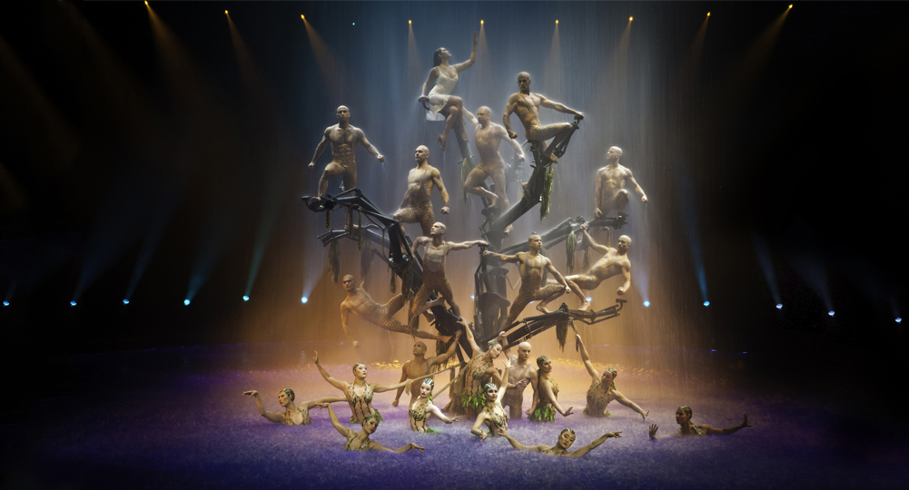
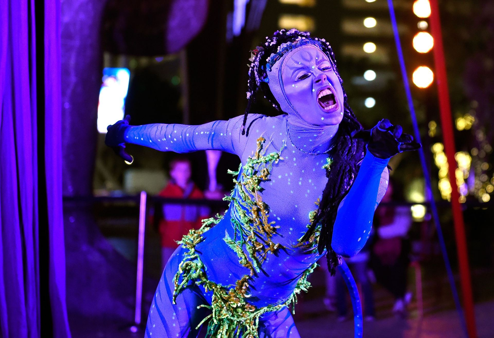

<template>
  <div class="MainContainer">
    <div class="TitleImg center">
      
    </div>

    <div class="triple-wide">
      <div class="first-container">
        
        <h2>Show Tips:</h2>
        <p>For a great deal on show tickets try being flexible. Pick 3-4 great Shows that look fun and the then visit the Tix 4 Tonight Booths located all over Vegas to save up to 60%. Its Vegas so go with the flow. </p>
        <a href="https://www.tix4tonight.com/">Tix4Tonight</a>
        
        <h2>Adult Entertainment</h2>
        <p>Las Vegas is notorious around the world for its mesmerizing adult entertainment, night life, stripper clubs, pool parties and everything you think is necessary for having fun. It's also the favorite spot for people looking to celebrate bachelor parties and because the city offers many facilities that will make these special events even more memorable. Here you can find an enormous choice of nightclubs, bars and lounges. No wonder that bachelors and bachelorettes choose the city as the ultimate destination for a vacation! Best of Las Vegas entertainment for adults caters to guys, girls, couples and anyone in between!   </p>
        
      </div>
      <div class="second-container">
        <h2 class="center">The Entertainment Capital of the World</h2>
        <p>There is a reason why Vegas is dubbed the Entertainment Capital of the World - there are more shows and performers here than in any other city. Las Vegas entertainment includes many resident shows - stand up comedians, Cirque du Soleil, magic, Broadway musicals, adult shows and funny hypnotists. There is never a night in the city without someone famous singing at some of the top concert venues. Boxing and UFC fights are also among the most popular events in the Sin City! Las Vegas concerts are the best in the world - the city frequented by entertainers - pop and rock stars, as well as by famous stand up comedians. </p>
        
        he city of all sins and excesses, Las Vegas is the perfect destination for a fun holiday filled with adrenaline and excitement. Vegas is much more than casinos and gambling. There are more entertainment options in Las Vegas than shows and nightlife! You will find here plenty of free activities, beautiful golf courses for a golf vacation, many attractions in and around the city, museums, spa salons, and of course entertainment for kids. Whether you are looking for a place where to spend an active honeymoon or an unforgettable family vacation, you will find everything you need in this thriving oasis located in the heart of the Nevada desert. The best of Las Vegas entertainment in 2019 offers a range of experiences you can't compare to anything else in the world.
        
        <h4>Play the Game...Get Free Stuff</h4>
        <p>One of the best ways to get free and 50% off show tickets is by playing the myVegas app.  It will take a few weeks to months of play, but you can reward yourself with free food, rooms and shows.  We strongly suggest you download the app and start playing today.  For all the details click Here.  Many fabulous prizes can be won, simply by playing this app consistently. The current My Vegas list of shows includes The Beatles Love Show, Zumanity, Fantasy, KA, The Australian Bee Gees, The Shark Reef, Thunder from Down Under, Carrot Top, Blue Man and many many more. </p>
        

      </div>
      <div class="third-container">
        <h2>Discount show tickets can be bought on EBAY </h2>
        <p>Start checking Ebay as soon as you know you are going to Vegas.  Many show tickets can be purchased for pennies on the dollar.  This list of shows is limited, but really great tickets can be purchased for next to nothing.  Search Vegas Tickets on Ebay for a low cost option.</p>
        
        <h2>Looking for a nightclub Deal?  </h2>
        <p>Check out this current offer on Groupon for the Koi Ultra Lounge at Planet Hollywood.  Drink can be crazy expensive in the Vegas nightclubs.  Grab this Groupon and you and a friend can get open bar from 10:30pm til 2:00am.  A great value if you plan on having several drinks, while clubbing.   </p>
        <p>The VIP Package includes: </p>
        <ul>
          <li>Priority entry to the lounge </li>
          <li>Welcome Shot</li>
          <li>Koi Ultra Lounge’s signature all-night open bar. Well drinks include: house vodka, rum, gin, whiskey, spiced rum, coconut rum, and amaretto, along with standard mixers such as juices, sodas, and tonic. </li>
          <p>Valid 10:30pm-2:00am </p>
        </ul>
      </div>
    </div>
  </div>
</template>
